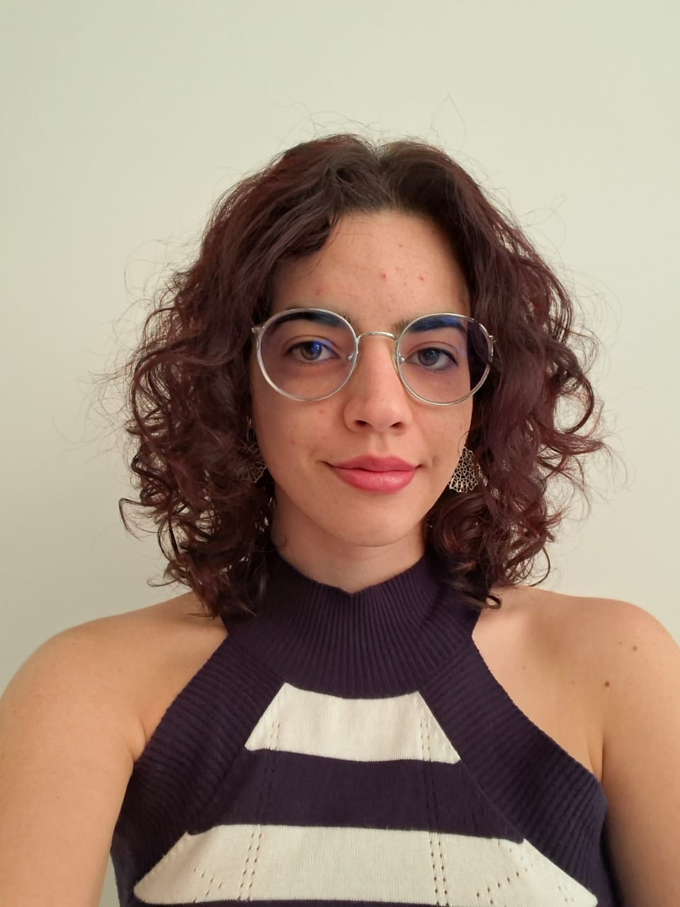
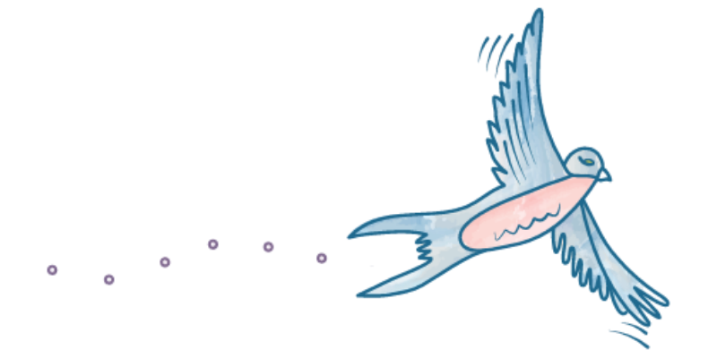

um respiro para a sua mente
Psicóloga · CRP 04/72818
Um lugar tranquilo
para cuidar de quem você é.
Algumas dores pesam em silêncio. Aqui elas ganham espaço para serem ditas — no seu tempo, sem julgamentos e com o acolhimento de quem caminha ao seu lado.
Atendimento exclusivamente online
- ✿ Acolhimento sem julgamentos
- ❀ No seu tempo
- ✿ Sigilo absoluto
- ❀ Atendimento 100% online
A psicoterapia e o trabalho analítico
Falar daquilo que dói não é fácil.
Mas pode ser mais leve.
A psicoterapia é um processo guiado por uma profissional especialista, e que envolve o trabalho de ambas as partes. No meu consultório, essa escuta é orientada pela psicanálise — atenta ao que se repete, ao que insiste e ao que ainda procura palavras. Afinal, não é simples falar das nossas dores; mas tudo se torna mais simples quando existe o comprometimento com a busca por algo novo, diferente do sofrimento já conhecido.
Assim, as sessões se tornam um espaço de acolhimento, mas também de transformação: a partir do que se fala, e do que se constrói daquilo que se escuta.

Prazer, sou a Maria Eduarda
Uma escuta cuidadosa,
feita no seu ritmo.
Sou psicóloga (CRP 04/72818) e conduzo a clínica pela psicanálise. Acredito num cuidado que respeita o tempo de cada pessoa: meu trabalho é oferecer um espaço seguro onde você possa se ouvir com gentileza, compreender as suas dores e descobrir caminhos para uma vida mais autêntica — mais próxima daquilo que você deseja.
Aqui não há respostas prontas. Há presença, escuta e o cuidado de construir, juntos, um movimento possível na direção da sua liberdade.
Maria Eduarda Benedito
Psicóloga · CRP 04/72818 Abordagem psicanalítica
A simbologia da andorinha
A fragilidade aparente
não impede o voo.
São aves migratórias que voam alto e fluem conforme as condições de cada ambiente. Animais pequenos, mas que servem como um lembrete: uma aparente fragilidade não impede movimentos em busca de liberdade, construção e autonomia.
Como funciona
Começar é mais simples
do que parece.
-
01
O primeiro contato
Você envia uma mensagem. Conversamos sobre o que te traz aqui e tiramos suas dúvidas, sem nenhum compromisso.
-
02
Nossa primeira sessão
Um encontro para nos conhecermos, no seu ritmo. Você fala o quanto se sentir à vontade — sem pressa.
-
03
O seu espaço, no seu tempo
Encontros regulares e online, no conforto de onde você estiver, para construirmos juntos um caminho possível para você.
Posso te acompanhar
Se algo dentro de você
pede atenção, há espaço aqui.
- Ansiedade e angústia
- Autoconhecimento
- Relacionamentos
- Autoestima
- Lutos e transições
- Estresse e esgotamento
Perguntas frequentes
Ainda com dúvidas?
Vamos com calma.
O atendimento é online?
Sim. O atendimento é exclusivamente online, por vídeo, para todo o Brasil — com o mesmo cuidado e sigilo de uma sessão presencial.
Qual é a abordagem da Maria Eduarda?
O trabalho é orientado pela psicanálise: uma escuta atenta ao que se repete, ao que insiste e ao que ainda procura palavras. Maria Eduarda é psicóloga, inscrita no CRP sob o número 04/72818.
Como funciona a primeira conversa?
Você envia uma mensagem pelo WhatsApp, conversamos sobre o que te traz e tiramos suas dúvidas, sem compromisso. Depois marcamos a primeira sessão, no seu ritmo.
Preciso saber exatamente o que falar para começar?
Não. Você não precisa ter as palavras certas nem um motivo grande. Se algo dentro de você pede atenção, já é suficiente para começar.
Quanto tempo dura a terapia?
Não há fórmula nem prazo fixo. A psicanálise respeita o tempo de cada pessoa; o percurso é construído em conjunto, sessão a sessão.
Como faço para agendar?
Pelo WhatsApp, no número +55 (32) 9935-8700. É só enviar um olá que combinamos o melhor horário para você.
o primeiro passo
Que tal começarmos
essa conversa?
Você não precisa carregar tudo sozinho. Vamos conversar — no seu tempo, com leveza, e no ritmo que fizer sentido para você.
Atendimento exclusivamente online · Sigilo absoluto · CRP 04/72818